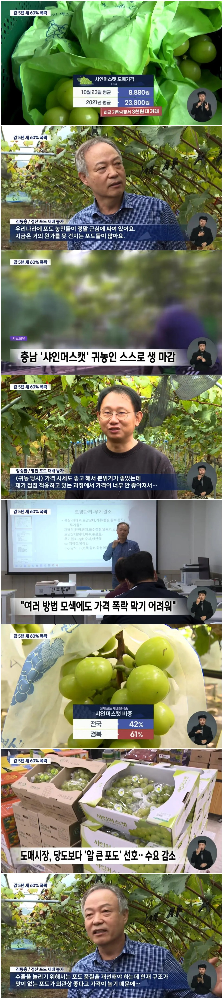

도매상은 거의 3천원까지 떨어짐

도매상은 거의 3천원까지 떨어짐
샤인머스켓 존나 비쌀때가 1송에 3만원이였나? 처음 먹었을땐 껍질도 연하고 맛있었는데
당도보다 알 큰 거 선호한다는 구라 뉴스 왜 내보내는 거임?
다들 200만원짜리 비파괴 당도 검사계 들고 당도 확인하면서 구매하지 누가 알맹이 크기 보고 경매 참여함 ㅋㅋㅋㅋ
ㄹㅇ 알 사람들은 다 아는데 왜 저런 소리를 하는거지
누군가는 이걸 사줘야하니까 ㅋㅋㅋㅋㅋ
서민이 포도 한송이를 2만원 주고 먹겠냐고.. 유행이 영원할수는 없음
비싸다고 소문나면 죄다 그쪽으로 몰려서 아직 익지도 않은 겉만 멀쩡해 보이는걸 상품이라고 쳐파니 망하지 켐밸 농사 짓던 사람들 밭 갈아엎고 샤인으로 갈아타서 망한 사람들 엄청 많음
처음 맛보는 맛이라 먹었던 거지 포도는 캠벨이 젤 맛있음
캠벨이 레거시임.

노맛이 너무 많음....
솔직히 저거는 포도맛이라할수없음 그냥 다른과일같음
포도를 대체할맛은아님
잘 팔린다고 우르르 몰려가서 샤인머스켓 다 심고, 공급 과잉 및 품질 저하로 인기 떨어지니 살려달라하면 어쩌라고요.
난 아직도 샤인머스캣 먹음 싸고맛있음ㅋㅋ
맛있는건 비쌈
가격만 내려간게 아니라 품질도 같이내려감
초기엔 18브릭스가 커트라인이었는데 이젠 14브릭스도 안되는것들이 돌아다니니 ㅋㅋ
캠벨이 더 비싸더라 ㅋㅋㅋㅋㅋㅋ
껍질이 질겨..
거봉이나 다시 해주세요 제발 맛없는거 그만하고
진짜 관리제대로 해서 당도 높은데는 여전히 잘나가고 대량으로 팔던곳이 죽어난다던데
그런곳은 백화점 식품관 이런데 가는곳이고,
저런농가는 이제 샤머 4년차넘어서 상품성 떨어지는 망고향은커녕 단내도 잘 안나는 질떨어지는곳들뿐이긴함ㅋㅋ
4500원에 한송이씩 팔길래 가끔 사먹는데 맛나더라
근데 이제 씨 있는 포도 못 먹겠더라
보기에만 그럴싸하고 껍질 두껍고 맛없는 샤인머스킷들 개많아짐
요샌 캔디포도가 조온나 맛있음
개 맛없는게 3년차부터 쏫아져나오니
물론 요즘거 맛있더라
이것도 처음나왔을떄는 맛있었는데ㅠㅠ
요즘엔 많이 싸졌어
이런식으로 따지면 모든 품목이 해당되지.. 두쫀쿠농가도 실태조사 한번 해주지 그래
존노맛이라 안팔리는거 같은데
사먹을때마다 후회함
요즘 그냥 일반포도가 훨씬맛있음
처음에는 진짜 와! 개쩐다 이랬는데 요즘은진짜별로더라
그냥 일반 보라색 포도 오랜만에먹어봤는데 맛있더라
거봉이 제일 좋음. 특히 자옥품종
사파이어포도가 제일인뎅
소신발언 캠밸포도가 근본이다
머루 거봉도 조아
인기 많다고 우르르가서 망하고 따흑흑하는거보면 탕후루나 인형뽑기나 뭐 다를바있나 싶다
나는 잘 안 먹는 게, 품질 내려간 게 큰 거 같음.
처음엔 엄청 달고 맛있었는데, 나중엔 이도저도 아닌 그냥 배부른 무언가. 나중에 재배한 분들이 경험 누적이 덜 돼서 그렇다던데.
당도보다 알큰거 선호한다고? ㅋㅋㅋㅋㅋㅋㅋㅋㅋㅋㅋㅋㅋㅋㅋㅋㅋ
근데 껍질 쓰레기 안나오고 씨도 거의 없어서 그냥 대충 물에 헹구고 먹으면되는게 참 편리하긴 함 ㅎㅎ
나 3송이 5천원주고 2박스삼
근데 맛없는거 떨어 겠지 하고 큰 기대안했는데
ㅈㄴ 탱글탱글하고 맛있더라
다른집도봣는데 4송이 7천원에팔고 하는거보고 가격 진짜 많이 떨어졌구나 라고 생각함
내가 매주 4키로씩 쳐먹는데
쿠팡 100그람당 단가 오르락내리락 하는거보면 주식같고 재밌음
여름에 1800원 넘었다가 저저번주인가 380찍음
김천같은곳에서 '제발 조기수확해서 맛없는거 팔지 말고 더 숙성시켜서 맛있는걸 팝시다' 라고 캠페인까지 벌였는데
욕심 그득그득한 새끼들이 명절특수 누리겠답시고
단맛 올라오지도 않는 샤인머스켓 따서 비싼값에 팔아치우니까 인기가 떨어진거임
그러다보니까 이젠 기존 검은포도가 샤인머스켓보다 더 맛있다는 인식까지 생기고 있음
질기고 덜 단경우더 많더라니
퀄리티도 떨어짐
요즘 일반 포도보다 죄다 저거 재배하는데 남아돌지
머루포도라고 불리는 mba포도가 달아서 맛있음
캠밸못따라와
샤인머스캣 이후로는 씨있는 포도 쳐다도 안봄
샤인머스켓 삼촌네에서 작은 농장서 키운건 존맛인데
밖에 파는거 너무 맛이 천차만별임.
평균당도 좆박은 뒤로 농가 근처 도로에 현수막 걸리더라
일정수치 아래로는 폐기좀 하자고
요즘껀 좀 먹을만해졌더라
맘에 안드는걸 굳이 사먹을 이유는 없잖아
품종을 잘 고르던가 가공해서 새로운 상품으로 만들어 팔던가
그건 니네가 알아서해야지